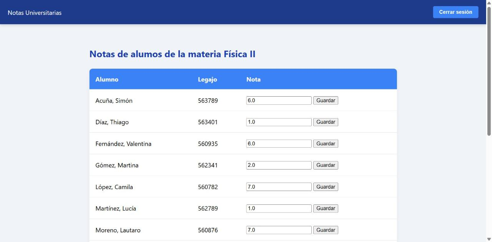
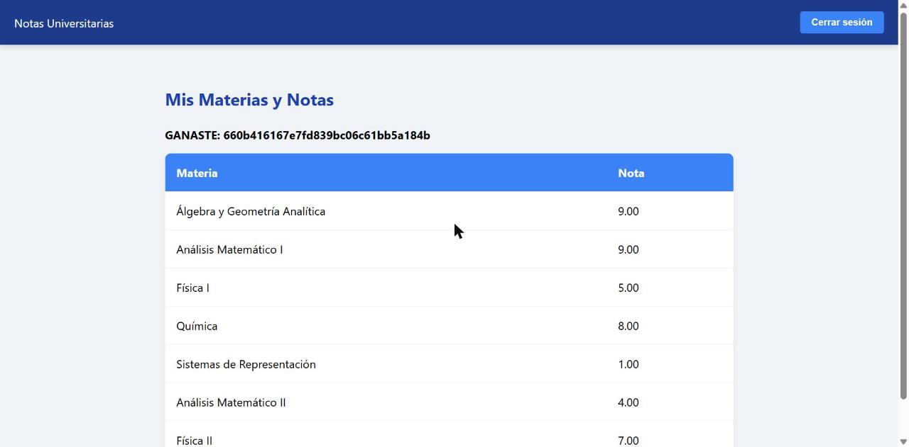

| ID del hallazgo | VULN-0007 |
|---|---|
| Título | Alteración de calificaciones por control de acceso roto, habilitado por credenciales de superusuario por defecto y panel de administración expuesto |
| Laboratorio / activo | Notas Universitarias (entorno de práctica autorizado del curso) |
| URL / endpoint | POST https://chl-<id>-notas-universitarias.softwareseguro.com.ar/home/ · /admin/ |
| Severidad | CRÍTICA — CVSS v3.1: 9.8 |
| Clasificación | CWE-1392 / CWE-285 / CWE-639 · OWASP A01:2021 Broken Access Control y A05:2021 Security Misconfiguration |
| Fecha de detección | 2026-11-11 |
| Autor/a | Sofía Lourdes Toledo Criado |
| Estado | Resuelto en laboratorio · remediación recomendada |
| Campo | Valor |
|---|---|
| ID del hallazgo | VULN-0007 |
| Aplicación / activo | Plataforma académica "Notas Universitarias" (Django + django-rest-framework-simplejwt, tras Cloudflare) |
| URL / endpoint | POST /home/ (editor de notas del docente) · /admin/ (panel Django) |
| Fecha de detección | 2026-11-11 |
| Reportado por | Sofía Lourdes Toledo Criado |
| Estado | Resuelto en laboratorio; remediación pendiente del lado del servidor |
| Alcance autorizado | Challenge del curso. Cuenta de prueba benjamin.sosa142. Datos ficticios de alumnos. |
Hallazgo: la plataforma de notas acumula varias malas configuraciones que, encadenadas, permiten a un atacante modificar la calificación de cualquier alumno en cualquier materia. El panel de administración de Django está expuesto en su URL por defecto y conserva las credenciales de superusuario por defecto (admin/admin); además, la función de carga de notas del docente no verifica que el profesor esté asignado a la materia ni al alumno que edita.
Riesgo para el negocio: cualquiera en Internet puede tomar control total del sistema (lectura, modificación y borrado de todos los datos) y falsificar el historial académico, comprometiendo la integridad de las calificaciones y la confianza institucional.
Impacto principal sobre la tríada CIA: Integridad (alteración de notas), Confidencialidad (acceso total a datos de usuarios) y Disponibilidad (un superusuario puede borrar datos).
Severidad y prioridad: Crítica (CVSS v3.1 9.8). Prioridad máxima: explotable de forma remota, sin privilegios previos y sin interacción del usuario.
Acción recomendada: cambiar de inmediato la contraseña del superusuario, restringir/ocultar el panel de administración, deshabilitar DEBUG en producción y agregar verificación de autorización por materia y alumno en el endpoint de carga de notas.
Se identificaron tres debilidades que conforman la cadena de explotación:
DEBUG = True en producción. Ante una URL inexistente, Django devuelve su página de depuración, que lista todas las rutas de la aplicación (admin/, api/token/refresh/, home/, logout/, challenge-status/) y expone trazas de error./admin/ expuesto con credenciales por defecto. El administrador de Django está habilitado en su URL por defecto y el superusuario conserva credenciales triviales (admin/admin), sin modificarse desde la instalación.is_staff) accede en /home/ a un formulario para cargar notas. El POST acepta los parámetros materia_id y estudiante_id provistos por el cliente sin validar que el docente esté asignado a esa materia ni a ese alumno, permitiendo editar la nota de cualquier alumno en cualquier materia.Encadenando (b) + (c): con el superusuario se obtiene rol docente y, abusando de (c), se eleva la nota del alumno objetivo en una materia que ese usuario ni siquiera dicta.
POST /home/ con cuerpo materia_id, estudiante_id, nota; GET/POST /admin/login/.materia_id y estudiante_id (referencias directas a objetos, controladas por el cliente).is_staff.admin/admin).materia_id/estudiante_id del cliente sin comprobar la asignación docente.DEBUG=True).Demostrado: acceso de superusuario al panel Django y modificación de la nota de benjamin.sosa142 en "Análisis Matemático I" de 2,00 a 9,00, en una materia no asignada al usuario utilizado, obteniendo el mensaje de éxito del desafío.
Alcance: con el superusuario se controla la totalidad del sistema (usuarios, permisos, tokens); con el fallo de autorización, cualquier cuenta docente puede falsificar las notas de todo el alumnado. Se afectan Confidencialidad, Integridad y Disponibilidad.
/api/token/refresh/. Se verificó que ese camino no era necesario: no existe una API de notas (las rutas se confirmaron con la propia página de depuración) y el usuario 36 resultó ser un alumno sin privilegios. La vía efectiva fue el panel + el editor de notas del docente.Versión utilizada: CVSS v3.1.
| Métrica | Valor / justificación |
|---|---|
| Vector CVSS completo | CVSS:3.1/AV:N/AC:L/PR:N/UI:N/S:U/C:H/I:H/A:H |
| Puntaje base | 9.8 |
| Severidad CVSS | Crítica |
| Métricas relevantes | AV:N (Internet); AC:L (login trivial + un POST); PR:N (credenciales por defecto, ningún privilegio legítimo requerido); UI:N; S:U; C:H/I:H/A:H (superusuario = control total: leer, alterar y borrar todos los datos). |
| Calculadora / fuente | https://www.first.org/cvss/calculator/3.1 |
| Prioridad interna | Crítica / inmediata. |
Justificación: el acceso con credenciales por defecto a un panel de administración de superusuario expuesto en Internet otorga control total del sistema, por lo que corresponde el máximo impacto en las tres dimensiones. El control de acceso roto del editor de notas amplía el abuso a cualquier cuenta con rol docente.
Objetivo de la prueba: elevar la nota de benjamin.sosa142 en "Análisis Matemático I" a 9.
Precondiciones: entorno de laboratorio autorizado; cuenta de prueba benjamin.sosa142.
Herramientas: navegador + consola de desarrollador.
DEBUG=True, Django lista todas las rutas y revela /admin/./admin/ con las credenciales por defecto admin/admin (superusuario).is_staff, /home/ muestra el formulario de carga de notas del docente para su materia (Física II), cuyo POST envía materia_id, estudiante_id y nota.estudiante_id de benjamín (8) y el materia_id de "Análisis Matemático I" (2, materia no asignada al usuario) y se envía el POST con nota=9.Solicitud de explotación (sanitizada):
POST /home/ HTTP/1.1 Host: chl-<id>-notas-universitarias.softwareseguro.com.ar Content-Type: application/x-www-form-urlencoded Cookie: sessionid=<sesión del superusuario> csrfmiddlewaretoken=<token>&materia_id=2&estudiante_id=8¬a=9

is_staff (superusuario por defecto), /home/ expone el editor de notas del docente. El POST no valida que el docente dicte la materia ni corresponda al alumno editado (control de acceso roto / IDOR).
admin/admin y modificación arbitraria de notas de cualquier alumno/materia.DEBUG en producción (DEBUG=False y ALLOWED_HOSTS correcto).POST /home/: validar en el servidor que el docente autenticado esté asignado a la materia_id y que el estudiante_id pertenezca a esa materia; nunca confiar en los IDs del cliente./admin/ (IP allowlist / VPN) y cambiar su URL por defecto.DEBUG=False en producción (las URLs ya no se listan ante un 404).Responsable sugerido: equipo de desarrollo backend / plataforma.
Fecha objetivo: inmediata (riesgo crítico).
| Fecha | Responsable | Acción | Resultado |
|---|---|---|---|
| 2026-11-11 | Sofía Lourdes Toledo Criado | Explotación y verificación en laboratorio | Confirmado (nota alterada a 9,00) |
| [AAAA-MM-DD] | [Equipo backend] | Retest tras remediación | Pendiente |
Estado final: Abierto (remediación pendiente del lado del servidor).
Observaciones: hallazgo resuelto como challenge; el reporte documenta causa raíz y remediación para un escenario real equivalente.